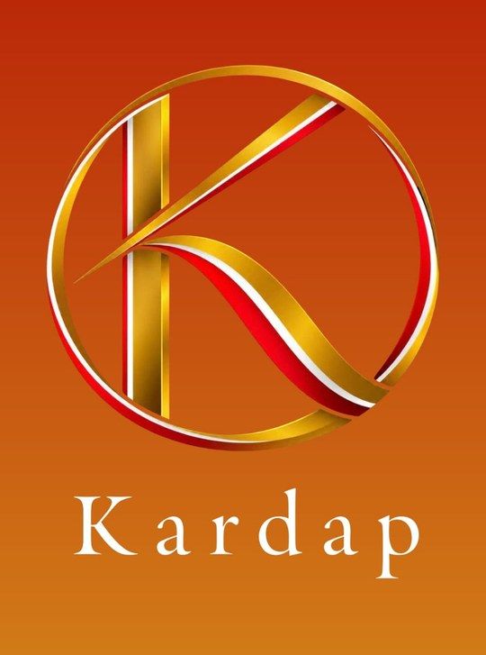

Cozinha portuguesa e clássicos da casa
Toque em qualquer prato para vê-lo em 3D. No celular, use “Ver na minha mesa” e o prato aparece em tamanho real em cima da sua mesa, pela câmera.
A carregar o menu…